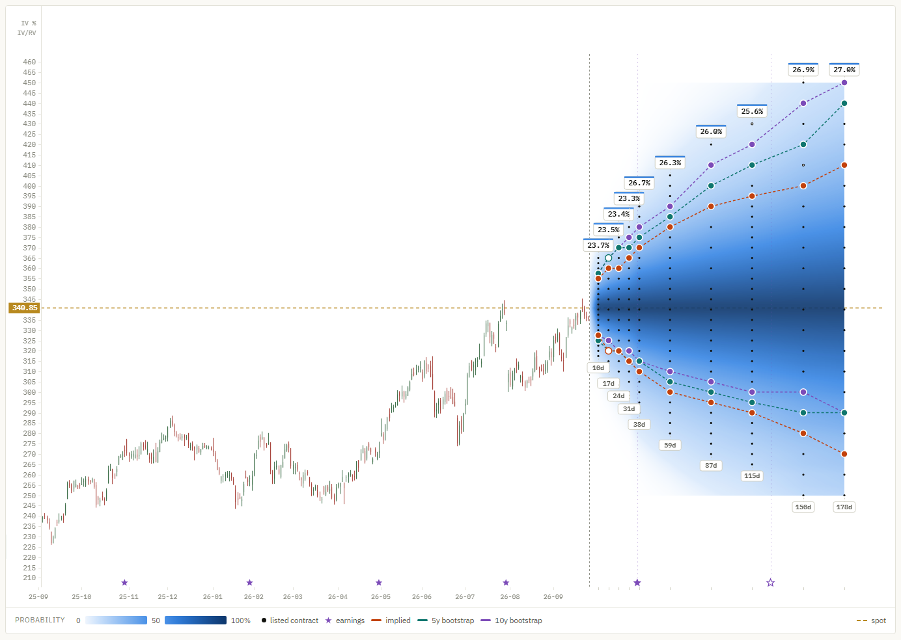

Manual
Everything the app shows and every control, in the order you meet them.
Install
OptionsCone is a single file and needs no installation.
- Download
OptionsCone.exefrom the latest release. - Move it wherever you like, for example to your desktop, and double-click it.
- The file is not code-signed, so Windows SmartScreen may say it protected your PC. Click More info, then Run anyway. Windows remembers the choice.
The first start takes a few seconds longer while the program unpacks itself. It runs on Windows 10 and 11 and uses the Edge WebView2 component that both include.
Each release lists a SHA-256 checksum. To check your download, open PowerShell in the download folder and run Get-FileHash OptionsCone.exe; the result should match.
Download a ticker
The bar at the top of the window is where data comes in.
| Control | What it does |
|---|---|
| Ticker box | Type one or more US tickers, separated by spaces or commas, for example AAPL MSFT. |
| download | Fetches the option chain, prices every contract and runs both bootstraps. Enter in the ticker box does the same. |
| refresh all | Downloads a fresh chain for every ticker you already hold. |
| weeklies | Includes weekly expiries as well as the standard monthly ones. More columns, longer download. |
| open in browser | Opens the same chart in your web browser. |
| data folder | Opens the folder where the archive and the chart are stored. |
A progress bar and a status line show what is happening. The first download of a ticker takes a minute or two; later ones are similar, because every download is a complete new chain. When it finishes, the chart reloads on that ticker.
Download during US trading hours
Option quotes are only meaningful while the US market is open: 9:30 to 16:00 New York time, usually 15:30 to 22:00 in Central Europe. Outside those hours the feed returns placeholder prices, and a cone built from them can be badly wrong. The app handles this in two ways:
- An earlier download exists from trading hours: the chart keeps showing that one. The new download is archived but not used, and the line next to the ticker says so, for example
newer download from 2026-09-25 23:30 not used (outside trading hours). - No download from trading hours exists yet, for example when a new ticker is first downloaded in the evening: the chart is shown with a red Not reliable warning above it, and the status line turns red. Download the ticker again during trading hours and the warning disappears.
Read the chart

Candles and spot
Up to ten years of daily or weekly candles. The dashed gold line is the current price (spot), labelled on the price axis. Stars on the date axis mark earnings: filled where the date is confirmed, hollow where it is projected from the reporting cycle, smaller for past reports.
The cone
To the right of today, each column of dots is one expiry, labelled with its days to expiry at the bottom. Each dot is a listed contract: calls above spot, puts below, so every contract shown is out of the money. A hollow dot means that contract's own quote failed the price checks and it uses the volatility of the nearest strike that passed.
The colour is the implied probability of touching that strike before that expiry, from pale (unlikely) to dark (likely). The legend under the chart gives the scale.
Contour lines
For every expiry, each model marks the listed strike whose probability is closest to your target, once above and once below spot, and joins the marks into a line. A filled marker is within 5 percentage points of the target; a hollow one is the nearest strike available but further off. Where no listed strike comes within 25 points, that expiry has no marker.
The implied line comes from option prices, the 5y and 10y lines from the stock's own history. When all three are shown, the implied line is drawn on top.
Expiry badges
The badge above each expiry is its model-free implied volatility, calculated like the VIX but for that expiry alone. When there is room, a second number shows the ratio of that volatility to realized volatility, for example x1.15. It turns orange from 1.30: the market is charging a lot more than the stock has recently moved, often ahead of earnings.
The figures above the chart
Spot price, the date of the data, the number of contracts, realized volatility (one year, exponentially weighted with a six-week half-life) and how many contracts passed the quality checks.
Controls
| Control | What it does |
|---|---|
| Ticker | Switches between the tickers you hold. The line next to it shows when the data was captured and how many downloads are archived. |
| Bars: daily, weekly | Candle interval. |
| Zoom: reset | Returns to the opening view. The label shows fit there, otherwise the zoom factor. |
| Track probability: down, up | The target probability for the contour lines below and above spot, in steps of 5%. |
| linked | Moves both sides together. |
| Contour: touch, expire | Whether the lines track the probability of touching the strike before expiry, or of finishing beyond it at expiry. |
| Models: implied, 5y, 10y | Show or hide each model's line. |
| Cone: probability, IV, open int., spread | What the cone is coloured by. Probability uses a fixed 0 to 100% scale; the others are stretched across the values on screen, with the ends shown in the legend. For spread, darker means tighter. |
| dots | Hides the contract dots to read the colour on its own. The tooltip keeps working. |
| fullscreen | Fills the window with the chart and takes the controls along. |
| Draw: off, trend, horizontal, clear | Drawing tools. Trend lines are dragged from one point to another; a horizontal line is placed with one click. Drawings stay pinned to price and date when you zoom or scroll. |
| EMA 1, 2 | Two exponential moving averages of the close. The number next to each is the period in trading days; on weekly bars it is converted to weeks. The settings are remembered. |
Mouse and keyboard
| Input | Action |
|---|---|
| Drag left or right | Scroll through time |
| Drag up or down | Slide the price range, to bring a part of the cone into view |
| Ctrl or Shift + wheel | Zoom in and out around the pointer |
| Wheel over a probability box | Change that target probability |
| ↑ ↓ | Change the downside target (and the upside too while linked) |
| F | Enter or leave fullscreen (Esc also leaves) |
| T H V | Trend line, horizontal line, drawing off |
| Ctrl+Z or Backspace | Remove the last drawing |
Tooltip
Hover a dot to see that contract: strike, distance from spot, expiry, days to expiry, delta and gamma. Below that come the numbers for the current cone colouring:
- probability: the contract's implied volatility, and touch and expire for all three models side by side, plus the mid price
- IV: implied volatility, and whether it is a call or a put
- open int.: open interest and today's volume
- spread: bid, ask, mid, and the spread in dollars and as a share of the mid
A warning line appears if the quote was flagged by the checks.
Delta and gamma are computed on the same American binomial tree as the implied volatility, so they can be compared with your broker's. Small differences come from the broker's own dividend and rate assumptions.
Data table

Open Data table below the chart. Strikes are rows and expiries are columns. cone colouring shows the same values the cone is coloured by (in probability mode, the implied touch probability); delta shows each contract's delta, calls above spot and puts below. A dot means the expiry does not list that strike. The shaded rows are the strikes within 2% of spot.
Data quality and Methods
Data quality shows how many quotes passed the checks, broken down by moneyness, with the median spread and open interest in each band. The rate that matters is the one for out-of-the-money contracts, because those are the ones the probabilities come from.
Methods explains every calculation in the app. The same material, in more detail, is on the methods page.
Your data
Everything is stored in %LOCALAPPDATA%\OptionsCone, which data folder opens:
| Folder | Contents |
|---|---|
archive | Every option chain you have downloaded, with its time and market state. Option quotes cannot be downloaded again later, so this is the part worth backing up. |
data, charts | The prepared chart data and the chart page. Rebuilt from the archive when needed. |
logs | optionscone.log, useful when reporting a problem. |
To uninstall, delete OptionsCone.exe and this folder.
Updating
Download the new OptionsCone.exe and replace the old one. Your archive stays where it is. If the new version stores chart data differently, it rebuilds your tickers from the archive on its first start, without downloading anything.
Troubleshooting
The window stays empty
The app needs the Microsoft Edge WebView2 Runtime. It is part of Windows 10 and 11, but can be missing on stripped-down installations. Install it from Microsoft and start the app again.
A download fails
Check the ticker symbol and your internet connection. Yahoo Finance occasionally limits requests; waiting a few minutes usually helps. The status line and logs\optionscone.log give the reason.
The numbers look stale, or a red warning appears
The chart always uses the newest download taken during US trading hours, and the capture time next to the ticker tells you which one. A red Not reliable warning means the ticker has no download from trading hours yet; see Download during US trading hours.
A contour line is missing on one side
An expire probability cannot exceed about 50% on either side of spot, so a higher expire target cannot be drawn. The app says so next to the model buttons.
Something else
Open an issue with the ticker, what you expected, and the end of the log file, or write to contact.aquart@gmail.com.